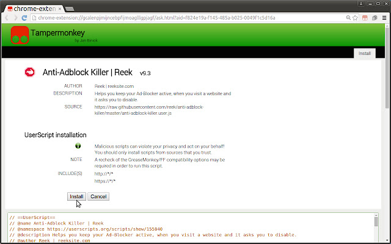
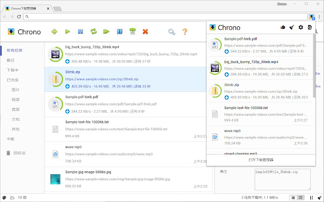
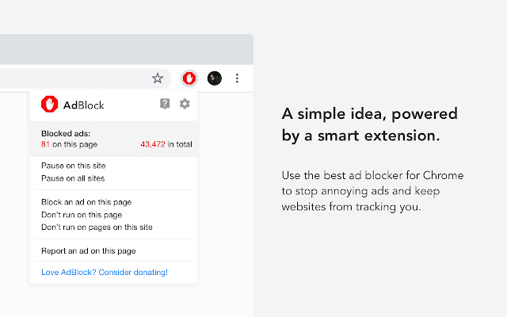
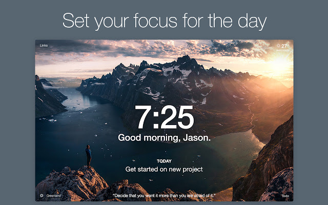
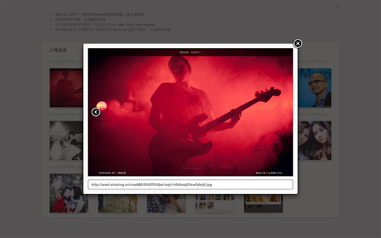
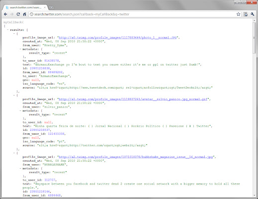
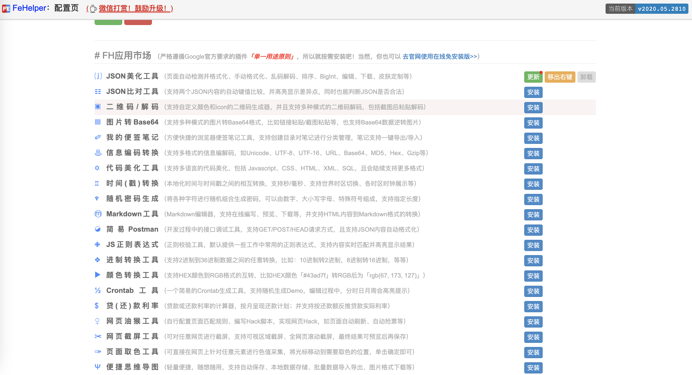
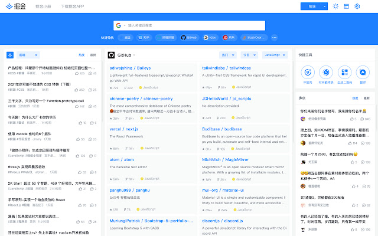

前言
Hi Coder，我是 CoderStar！
上次给大家推荐了一波Mac效率软件，大家都说软件都很不错，但就是有一个问题：
软件有了，请问 Mac 电脑找谁领？ 这…
我是一个重度的 Chrome 使用者，还是给大家带来一波好用的 Chrome 插件吧，都是我自己亲身使用过觉得不错的，推荐给大家。
嗯……，这下不用领 Mac 了吧。
日常类
Tampermonkey
Tampermonkey（油猴）是最受欢迎的浏览器扩展之一，拥有超过 1000 万用户，绝对算是 Chrome 最强大的扩展了。
其中脚本可前往Greasy Fork获取。这个脚本中不乏有去广告、网页限制去除等功能。

Chrono
Chrome 有自己默认的下载器，但是功能太过简单。Chrono 下载管理器是 Chrome™浏览器下第一款也是唯一一款功能全面的下载管理工具。

OneTab
Chrome 占用内存高已经是一个不争的事实。OneTab 节省高达 95％的内存，并减轻标签页混乱现象。
AdBlock：广告拦截
AdBlock 是最好的广告拦截工具，拥有超过 6500 万用户，也是最受欢迎的 Chrome 扩展程序之一，下载量超过 3.5 亿次！

Awesome Screenshot 截图与录屏
截图和录屏 2 合 1 的工具，支持截取整个页面，快速分享屏幕。
超级截图录屏大师是一款录屏神器，也是一款截屏神器．屏幕截图 & 图片编辑，屏幕录像＆视频编辑，所有这些截图，录屏功能，都被一气呵成的集成到插件和对应的网站服务中。

二维码生成器 (Quick QR)
Chrome 上好评率最高的二维码生成器：可以方便地把当前页面转化成二维码，也可以把网页上任何文本或链接，甚至是您输入的任意内容都转化成二维码。
不过新版本的 Chrome 在网址输入框尾部自带了生成二维码功能。

Fatkun 智能下载器
Fatkun 智能下载器可高效实现下载管理，网页图片，视频，音频等内容的嗅探和下载，同时扩展集成多个网站的智能脚本，快速提取你想要的内容。
Momentum
用包含待办事项、天气和灵感的个人仪表板替换新标签页。一句话，就是让新标签页更好看。

新浪微博图床
简单好用的新浪微博图床, 支持选择 / 拖拽 / 粘贴上传图片, 并生成图片地址,HTML,UBB 和 Markdown 等格式, 支持浏览和删除历史记录

Github 相关
Octotree
增强 GitHub 代码审查和探索的浏览器扩展，非常建议大家安装，浏览 Github 项目时不要太爽！

GitHub 黑暗主题
基于 Atom One Dark 的适用于所有 GitHub 的深色主题。

Sourcegraph
向 GitHub、GitLab 和其他主机添加代码智能：悬停、定义、引用，适用于 20 多种语言。就是让我们可以不使用 IDE 来快速查看代码之间的关系

GitZip for github
可以将 github 仓库的子目录和文件压缩成 zip 下载。

Enhanced GitHub
显示存储库大小、每个文件的大小、下载链接和复制文件内容的选项。

工具类
JSONView
当我们通过浏览器访问接口返回 JSON 数据时，JSONView 可以帮助我们自动将 JSON 格式化，方便展示，并带有折叠、高亮等功能。

Web Developer
用过 Chrome 浏览器调试 Web 的都应该用过自带的 DevTools 工具，而 Web Developer 插件则又增强了一些功能，比如禁 Javascript，禁插件，编辑 css，cookie，form 等。

Postman
这个相信大家都知道，我就不介绍了。
FeHelper Web 前端助手
FE 助手：包括 JSON 格式化、二维码生成与解码、信息编解码、代码压缩、美化、页面取色、Markdown 与 HTML 互转、网页滚动截屏、正则表达式、时间转换工具、编码规范检测、页面性能检测、Ajax 接口调试、密码生成器、JSON 比对工具、网页编码设置、便签笔记等功能。

掘金
摸鱼神器，那当然是开玩笑的！
官方答案应该是：为程序员、设计师、产品经理每日发现优质内容。

最后
最后，祝大家周末愉快！
Let’s be CoderStar!